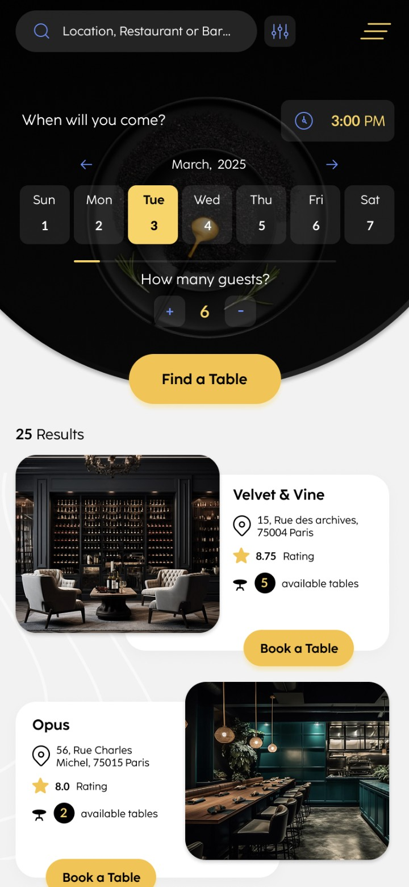
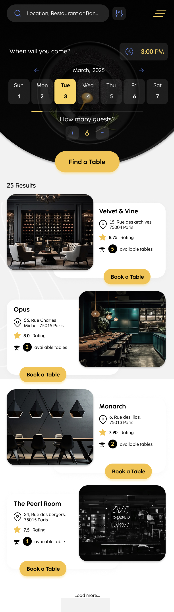
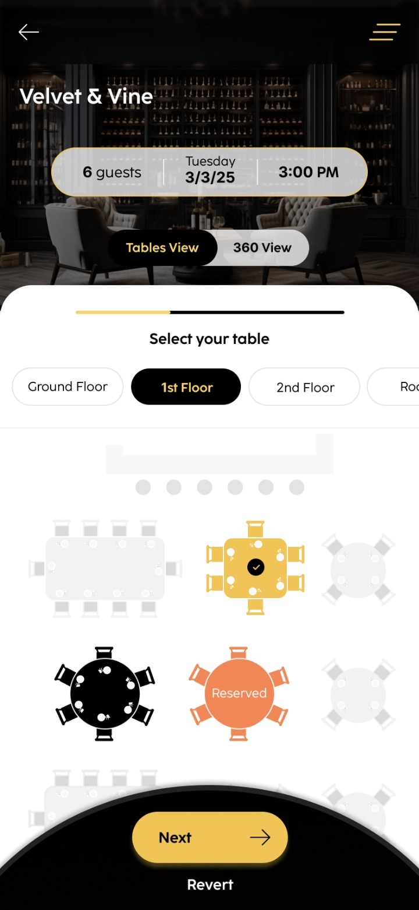
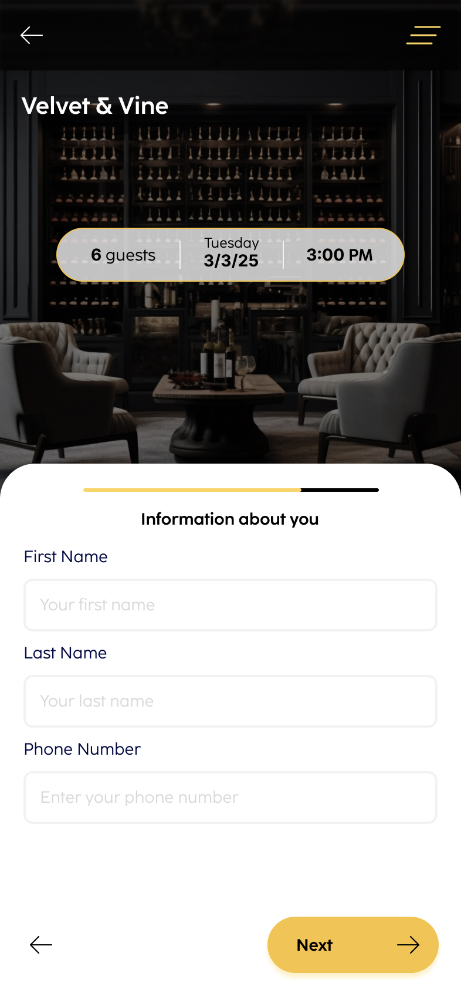
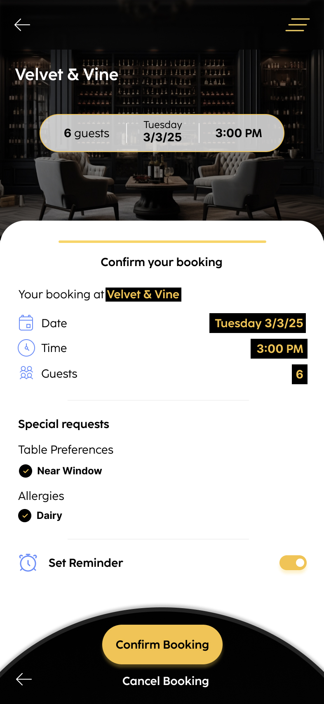

Pick a date, time and party size on a dial, then browse venues with ratings and live table availability.
Date & guestsLive availability
A concierge-style dining app for discovering venues and booking the right table, from date, guests and live availability to an interactive floor plan and a confirmed reservation.
Most reservation apps stop at “table for two, 8pm”: a form, a confirmation, no sense of the room you’ll sit in. Related set out to make booking feel like the start of the evening, not a transaction.
We designed a flow that moves from a tactile date-and-guests dial, to curated venue discovery, to an interactive floor plan where you choose the exact table, reserved seats greyed out, your pick glowing gold.
We owned the experience end-to-end: the flow, the elegant black-and-gold UI, and the front-end, including the floor-plan interactions and the 360° venue view.
Mapped craving → discover → choose table → confirm, with a clear progress bar carrying the whole way.
An elegant black-and-gold visual language with serif headings that feels like a fine-dining menu.
Built the per-floor table picker (open, selected and reserved states) plus the toggle to a 360° room view.
Designed and built the tactile picker for day, time and party size, one confident gesture.

Pick a date, time and party size on a dial, then browse venues with ratings and live table availability.

Results respond to the dial above, each venue card carries its rating, address and how many tables are still open.

An interactive floor plan across multiple levels: tap an open table, see reserved ones, switch to a 360° view.

A short sheet over the venue photo, name and number only, with the booking summary pinned above so context never leaves.

Date, time and guests restated, special requests and allergies acknowledged, and a reminder set before the single confirm action.
A tactile dial for choosing the day, hour and party size in one gesture.
Curated restaurants and bars with ratings, location and tables left.
Real tables on real floors, pick the exact seat, or spin to a 360° view.
Special requests, a confirmed booking and gentle reminders before you arrive.